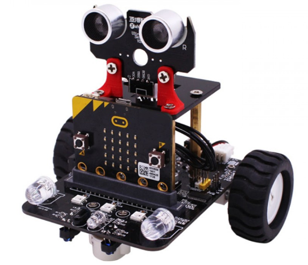

My favorite part about this challenge was combining the Micro:Bit SBM with the Smartbot Robot platform. This allowed the students to see how a piece of technology like the Micro:Bit can be used and extended for further fun and educational purposes. Also, the students has a fun learning how to program the robot. From the simple commands of forward, backward, turn right and left to making the robot follow a line the programming part of the class came alive and fun! The students were always experiementing with their programs and code and even each other as the drive to be able to make their robots do something new was endless and fun and really drove the students' learning.
Additionally, my students loved creating and setting up obstacle courses and mazes from simply everyday classroom objects for their robots to navigate through. At times it seemed a bit chaotic but I feel that is when thereal learning was occurring
My Micro:Bit robotics application unit Models Excellence for not only covering all of the content standards defined by the Nebraska Department of Education for middle level courses – Introduction to Computer Science, but also for integrating concepts across multiple content areas including Common Core Standards for language arts, math, and the Nebraska Science standards. The lessons in my robotics unit combined with the Micro:Bit robot platform provided an excellent interdisciplinary integration that created a setting where the use and understanding of topics, concepts and ideas from Science, Technology, Engineering, Math could occur in a natural, real-world way in the robotic lessons.
Furthermore, the Robotic application and unit Models excellence in meeting and supporting all of the standards from the Nebraska Department of Education Standards for Middle Level - Introduction to Computer Science. All of the lessons for the Micro:Bit smart robot were standards-based and aligned in an effort to help my students acquire competency in the recognized, grade-appropriate standards
of computational thinking and computer programming skills and knowledge.
This application also Models Excellence in the area of learner-centered activity and first-hand
experience as defined by the Nebraska STEM Instructional Resource Rubric. In all of the lessons, the
students were asked to work collaboratively with their peers in small groups in a hands-on robotics
application to define, plan, develop and create the code to get their robot to complete a specific task or solve a specific problem. The individuals in the student groups shared all of the planning responsibility in the activity and often had communicate to work together and experiment with variations of the of their robot programs to achieve the desired outcome or solution. Even though students worked collaboratively in groups each group member was responsible for being able to create and explain their own or the groups logic and program to others.
The Micro:Bit Smart robotics application Models Excellence because it promotes critical thinking,
creativity, collaboration and communication (4C) skills through STEM in a school-based application. All
of the lessons in the robotics application unit encouraged and required students to use critical thinking skills, creativity, collaboration and communication to plan, develop and then apply and use
technology to create programs so their robots could perform the given tasks or solve a given problem.
Additionally, science was integrated in to the lessons in the discussion of sensors and capabilities of
the robot. Students groups would use the engineering design and problem-solving process to collaborate and effectively communicate their ideas to define the problem and prepare solutions.
Additional communication skills were demonstrated through a written reflection component of each
assignment where students were asked to explain their design process. This reflection should not only
include not just their successes but also their failures, as failure is also very valuable part of the
learning process.